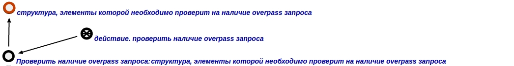

Задачей агента проверки наличия overpass запроса у элементов в рамках заданной структуры является проверки наличия overpass запроса у элементов в рамках заданной структуры. Данный агент инициируется при условии появления в памяти вопросной конструкции, соответствующей запросу проверки наличия overpass запроса у элементов в рамках заданной структуры. Аргументом запроса выступает структура, экземпляры элементов (абсолютных понятий) которых нужно проверить на наличие overpass запроса. Пример вопросной конструкции представлен ниже:
